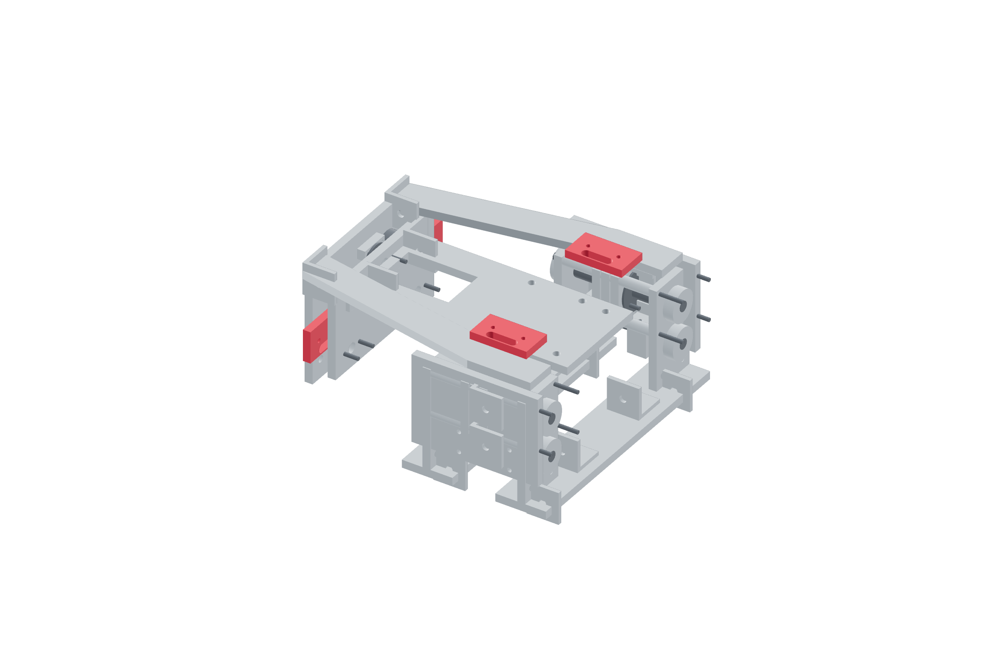

Payload / crash detection96 / 179
Mount the two independent crash channels
Each channel opens for either axial sign or a missing magnetic tray. One belongs to the relay coil; the other belongs to the logic STOP sense loop.
Add4 switches · 8 M3 × 20 · 4 M6 × 25 / governed washers / nuts
Tools / setupContinuity meter · power unplugged · tray catch installed

- Set each axial flat-dwell cam to open its COM–NC contact for either sign near 0.25 mm, before ±1.0 mm capture.
- Set each plate-presence switch so the fully seated tray holds its COM–NO closed; remove the tray to verify it opens.
- Wire one axial and one presence contact in series as CH1. Repeat independently as CH2.
- Meter both channels for seated, positive axial, negative axial and removed-tray cases. Closing a channel never authorizes motion.
Ready when
CH1 and CH2 each close only with the mount healthy and seated, and independently open for every tested release/missing-tray case. A shared terminal, wrong NO/NC choice or overtravel-damaged switch defeats detection. Correct both independently metered channels before routing power.